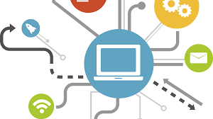

Consejos Básicos

Mantenerse seguro en línea es esencial en el mundo digital actual. Aquí hay algunos consejos básicos para proteger tu información personal y asegurar tu privacidad en internet:
- Actualiza tus dispositivos: Mantén tu sistema operativo, aplicaciones y programas actualizados para protegerte contra vulnerabilidades de seguridad conocidas.
- Utiliza contraseñas seguras: Crea contraseñas largas y complejas que sean difíciles de adivinar y úsalas de manera única para cada cuenta.
- Evita enlaces y correos electrónicos sospechosos: No hagas clic en enlaces no solicitados o descargues archivos adjuntos de fuentes desconocidas, ya que pueden ser ataques de phishing.
- Utiliza una conexión segura: Evita utilizar redes Wi-Fi públicas para realizar transacciones financieras o acceder a información sensible. Utiliza una VPN si es necesario.